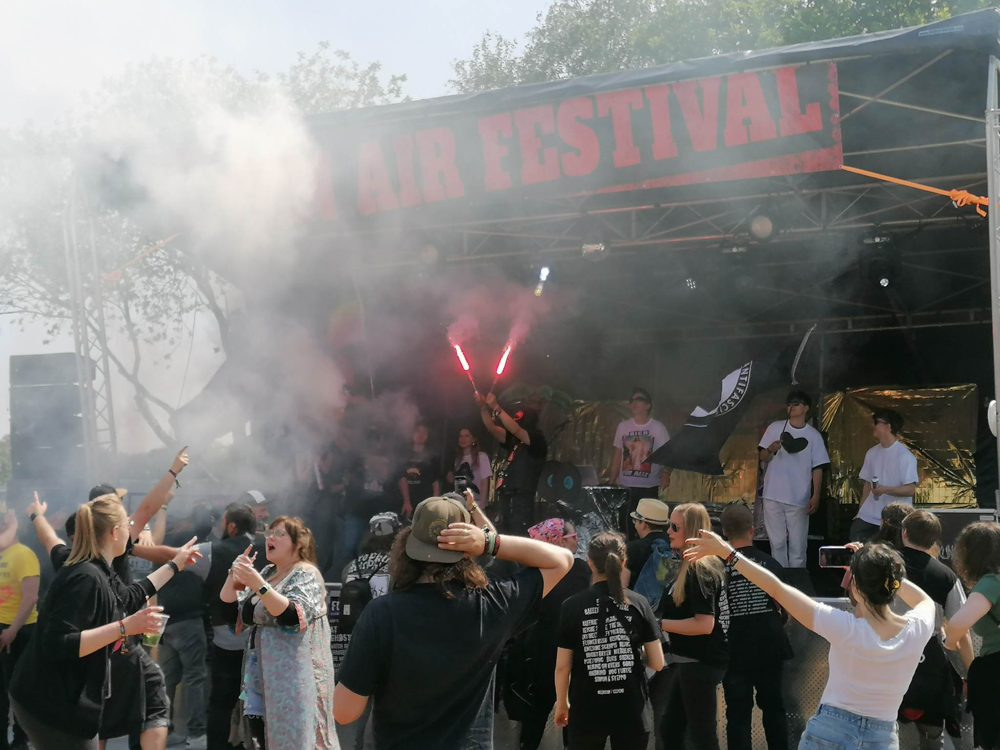
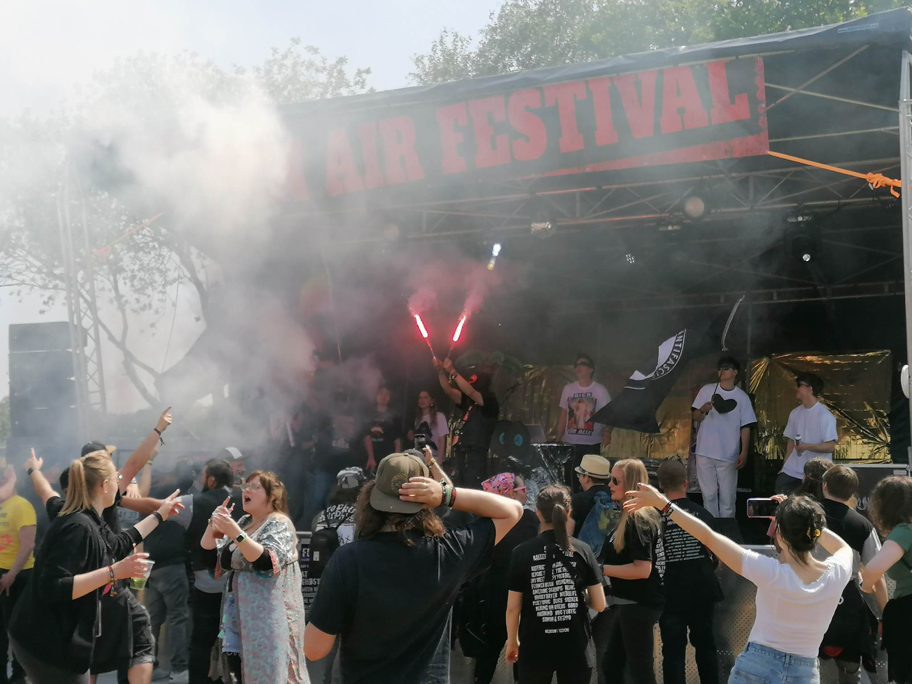
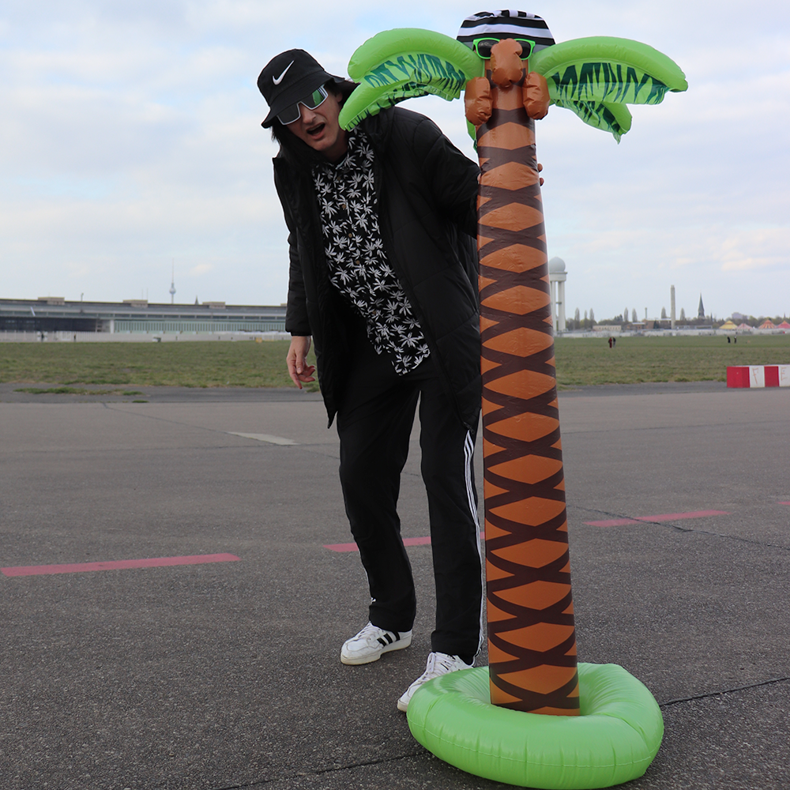
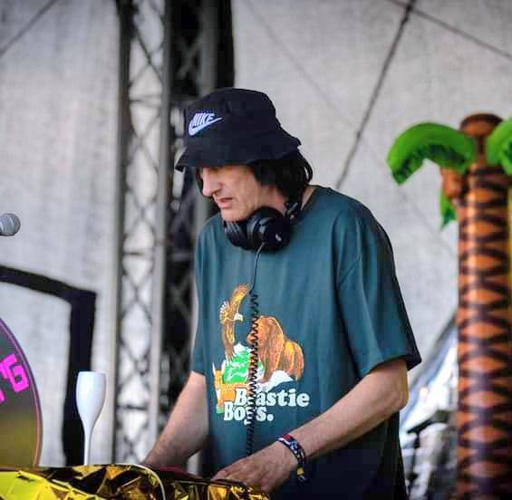
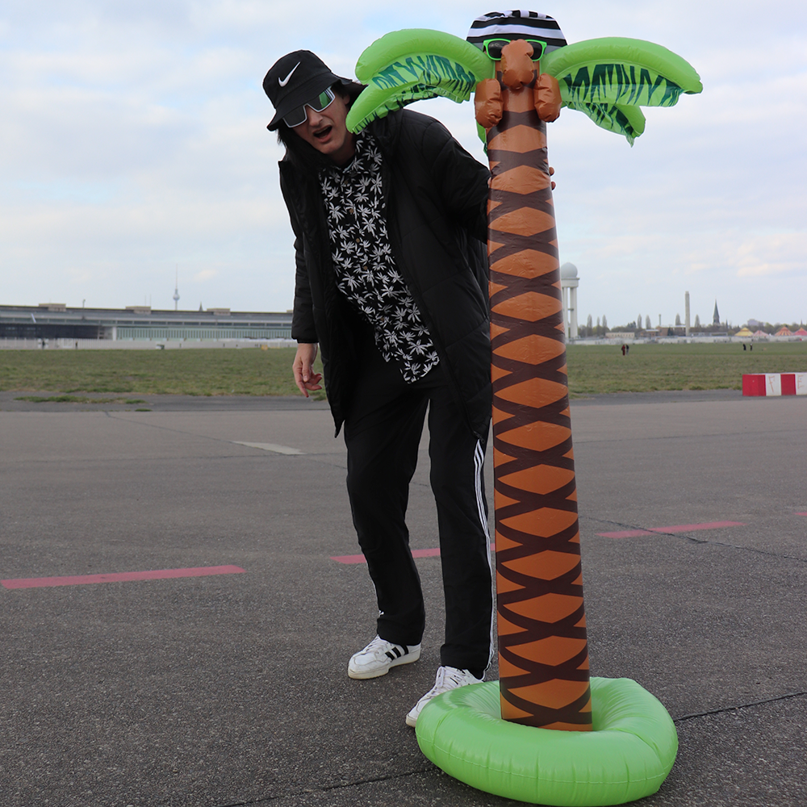
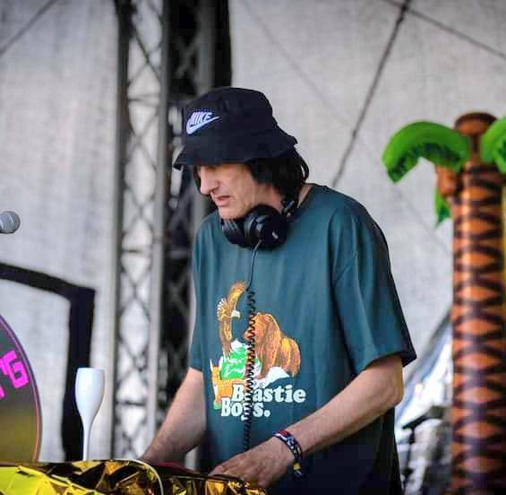

Mallejörg liefert kleine und große DJ-Sets aus den Genres Elektro, Hip-Hop, 80er/90er-Hits oder Punkrock. Für 20 Minuten oder auch einen ganzen Abend. Inklusive Schnapsrunde, Ballons, Konfettikanone und trashiger Bühnendeko.
Der perfekte Stilbruch für Festivals in Umbaupausen oder den Aftershow-Abriss oder als Preshow / Aftershow-Act. Trash as trash can!
Keine Mallehits. Keine sexistischen, rassistischen oder homophoben Inhalte. Einfach nur Party.
Einige meiner Lieblings-Hits aus den Setlisten
- UFOs überm Fernsehturm – GSGF
- Good Life - Inner City
- Let the Music Play – Shannon
- Limit – Deichkind
- Dr. Greenthumb - Cypress Hill
- Alerta Antifascista – ZSK
- Venga Boys - We like to Party
- Boomerang – Blümchen
Impressionen
 

 


